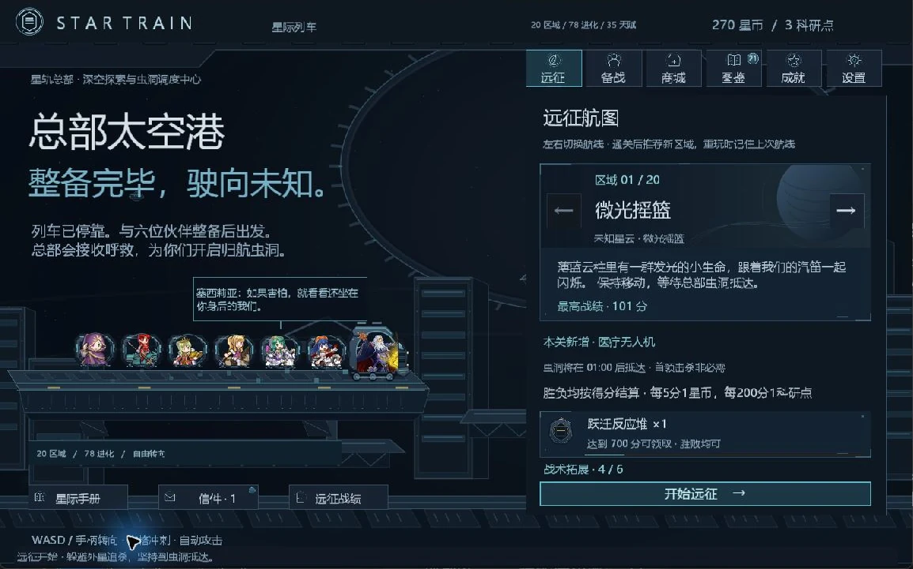

BENGINE · OPEN SOURCE 2D ENGINE
专注创造。
让世界动起来。
一个想法，可以是一个世界的开始。
用熟悉的 C# 工作流和可组合的 2D 工具，
把你的下一款游戏带到玩家面前。
熟悉的技术，自由的创作C# 14.NET 102D FIRSTMIT LICENSEOPEN SOURCE ↗
FROM IDEA TO PLAY让创作，自然发生。
从第一个 Sprite，到一个完整的游戏世界。
把精力花在有趣的想法上。
认识 BEngine ↗
01 / CREATE熟悉的方式，新的可能。
Scene、GameObject 和 Component，配合 C# 生命周期与可视化 Inspector，让原型、调试和迭代衔接起来。
02 / COMPOSE需要什么，就组合什么。
动画、物理、寻路、UI 与音频按包组合。通过 Package Manager 管理依赖，让工具跟着项目成长。
03 / DELIVER从可玩，到交付。
用 AssetBundle 组织游戏内容，按 package 增量构建、更新和修复，让资源迭代成为开发流程的一部分。
A WORKSPACE THAT MAKES SENSE看得见的世界，
掌握得住的细节。
在 Scene 中搭建，在 Inspector 中调整，在 Game 中验证。让对象、资源和代码，处在同一个创作上下文。
- 层级、场景、预制体与资源导入
- UI Builder、动画与 2D 制作工具
- Play 模式、Console 与诊断工具
创建第一个场景 ↗
BEngine Editor / BEngine Examples

BENGINE EDITOR · 实际编辑器画面

GAME SHOWCASE / 01星际列车
驶向未知星云。
一款以自由转向、列车成长和星云探索为核心的 2D 生存游戏。在实际作品里，探索引擎工具的可能。
查看工程 ↗
SMALL CORE. MORE POSSIBILITIES.你的工具箱，由你定义。
39 个扩展包，覆盖从 2D 制作到内容交付的工作流。
一个轻量核心，让每个项目拥有自己的组合。
AnimationPhysics2DUIElementsAudioAssetBundles
浏览全部扩展包 ↗KEEP EXPLORING
每一次探索，都有起点。
↗从第一个场景开始
获取引擎、认识编辑器、运行 Core 示例。一步步，让你的想法先动起来。
阅读入门指南 ↗
{ }为工具找到答案
从核心 API 到扩展包说明，查阅与源码一起维护的文档和可导入示例。
探索开发文档 ↗
⌘让引擎一起成长
阅读代码、提出问题，或贡献你的改进。开源，让工具的未来由创作者一起书写。
交流与反馈 ↗
下一个世界，从你开始。
用 BEngine，把脑海中的「如果」变成屏幕上的「现在」。